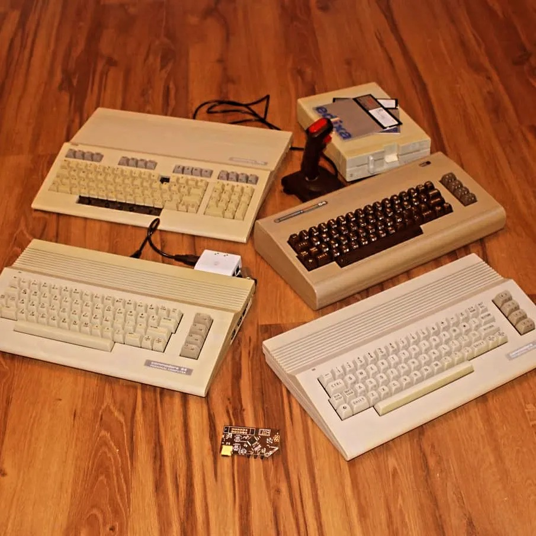

<!doctype html>
<html lang="en">
	<head>
		<meta charset="utf-8">
		<meta name="viewport" content="width=device-width, initial-scale=1.0, maximum-scale=1.0, user-scalable=no">

		<title>reveal.js</title>

		<link rel="stylesheet" href="dist/reset.css">
		<link rel="stylesheet" href="dist/reveal.css">
		<link rel="stylesheet" href="dist/theme/night.css">
		<link rel="stylesheet" href="css/custom.css">

		<!-- Theme used for syntax highlighted code -->
		<link rel="stylesheet" href="plugin/highlight/monokai.css">
	</head>
	<body>
		<div class="reveal">
			<div class="slides">
				<section data-markdown data-separator-vertical="^--$">
					<script type="text/template">
						<!-- .slide: data-background-color="blue"-->
						---
						<div class="r-vstack">
							<p class="cyan">...to feel like a game dev pioneer...</p>
							<div class="r-hstack gap1">
								<div class="toright smaller">
									<code>1975</code> Atari Pong<br>
									<code>1982</code> River Raid<br>
									<code>1983</code> Mario Bros.<br>
									<code>1983</code> Montezuma's<br>
									Revenge
								</div>
								<video data-autoplay loop autoplay src="img/tony-title.mp4"></video>
								<div class="toleft smaller">
									Atari VCS <code>1977</code><br>
									Atari 400/800 <code>1979</code><br>
									Commodore 64 <code>1982</code><br>
									Amiga 1000 <code>1985</code>
								</div>
							</div>
							<p class="pink">Maciej Małecki, 2024</p>
						</div>
						---
						<!-- .slide: data-background-image="img/retro-collector.jpg"-->
						<!-- .element: class="img-reduce bg wide"-->
						---
						<!-- .slide: data-background-color="pink"-->
						<video data-autoplay loop autoplay height="600px" src="img/montezuma.mp4"></video>
						---
						
						--
						
						---
						<div class="r-hstack gap1">
							<video data-autoplay loop src="img/tony-gameplay.mp4"></video>
							<div>
								<ul>
									<li><code>5</code> months - a playable demo</li>
									<li><code>12</code> months of dev total</li>
									<li><code>5</code> levels</li>
									<li><code>145</code> rooms</li>
									<li><code>9</code> music tunes</li>
								</ul>
							</div>
						</div>
						<a href="https://monochrome-productions.itch.io/tony">https://monochrome-productions.itch.io/tony</a>
						---
						<div class="r-hstack gap1">
							<div>
								<ul>
									<li><code>23,023</code> LOC of MOS 6502 Assembly</li>
									<li><code>two</code> 5'25'' 180kB disks; or</li>
									<li><code>one</code> 512kB cartridge</li>
									<li><code>328</code> bytes of free memory left</li>
									<li><code>0%</code> of test code coverage</li>
								</ul>
							</div>
							<video data-autoplay loop src="img/tony-lvl3-stones-2.mp4"></video>
						</div>
						---
						<div class="r-hstack gap1">
							
							<ul>
								<li>tested with bare hands</li>
								<li>tons of after marked storage tech</li>
								<li>varied kinds of sound chips</li>
							</ul>
						</div>
						---
						<!-- .slide: data-background-image="img/codeium.png"-->

					</script>
				</section>
			</div>
		</div>

		<script src="dist/reveal.js"></script>
		<script src="plugin/notes/notes.js"></script>
		<script src="plugin/markdown/markdown.js"></script>
		<script src="plugin/highlight/highlight.js"></script>
		<script>
			// More info about initialization & config:
			// - https://revealjs.com/initialization/
			// - https://revealjs.com/config/
			Reveal.initialize({
				hash: true,
				width: 1200,
				height: 700,
				slideNumber: 'c/t',
				autoPlayMedia: true,

				// Learn about plugins: https://revealjs.com/plugins/
				plugins: [ RevealMarkdown, RevealHighlight, RevealNotes ]
			});
		</script>
	</body>
</html>
